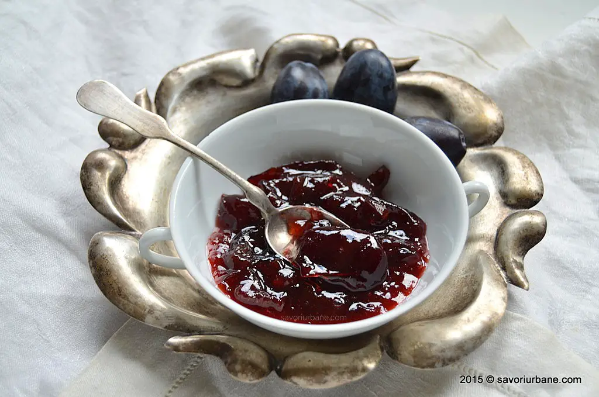

Gem de prune

Descriere
Gem de prune reteta mamei mele, asa cum se prepara la noi in casa. Este aproape o dulceata de prune pentru ca raportul zahar/prune este de la 0,3 pana la 1/1 si mai raman si bucatele intregi de fruct. Cu ce difera acest gem de prune de altele? Prin faptul ca nu contine conservant si ca nu este fiert in disperare si-si pastreaza culoarea frumoasa rosiatica. In plus, noi ii punem un pic de rom la final.
Ingrediente
- 2 kg prune curatate de samburi
- 1 kg de zahar (sau 1,4 kg daca prunele sunt foarte acre)
- zeama de la o lamaie
- 50 ml rom superior (sau 2 fiole de esenta de rom)
Mod de preparare
- Puneți prunele într-o cratiță mare și adăugați zahărul brun și batonul de scorțișoară.
- Aduceți la fierbere la foc mic, amestecând din când în când.
- Lăsați să fiarbă la foc mic, amestecând din când în când, timp de aproximativ 40 de minute, sau până când prunele s-au înmuiat și gemul a început să se îngroașe.
- Scoateți batonul de scorțișoară.
- Adăugați romul și amestecați bine.
- Turnați gemul în borcane sterilizate și închideți-le ermetic.
- Întoarceți borcanele cu capul în jos și lăsați-le să se răcească complet